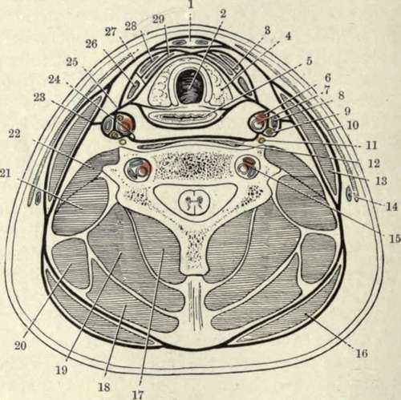

The Sterno-Mastoid. Continued
Description
This section is from the book "Surgical Anatomy", by John A. C. MacEwen. Also available from Amazon: Surgical Anatomy.
The Sterno-Mastoid. Continued
(3) A prevertebral layer runs across the neck in front of the prevertebral muscles, forming a partition between the posterior muscular and anterior visceral segment of the neck. Above, it is attached to the basis cranii, and below it is continued into the thorax. Laterally, this layer fuses in the upper part of the neck with the carotid sheath, the posterior part of which it forms; while in the lower portion of the neck it extends laterally into the posterior triangle lying over the subclavian vessels and cords of the brachial plexus, and accompanying them into the axilla. As the deep cervical fascia is very tense and strong, abscesses in the neck have generally difficulty in reaching the surface, except those which occur in the front of the neck just under the superficial investing layer, which is thin at this part. In many instances.
Therefore, abscesses, especially those occurring between layers Nos. 2 and 3, instead of coming to the surface, penetrate some of the structures in the neck, such as the trachea and oesophagus, and sometimes the pleura, or even the great vessels. A prevertebral abscess, lying as it does behind layer No. 3, might be guided by it down into the posterior mediastinum, or, following the layer covering the subclavian vessels, reach the posterior triangle or the axilla. Not infrequently, however, these abscesses point in the pharynx or oesophagus. Layers Nos. 2 and 3 form a compartment for the pharynx, larynx, and great vessels, etc., and as these lie loosely in this space, surrounded by connective tissue, they are free to move with respiration and deglutition, and to accommodate themselves to pressure of tumours, etc.
The muscles of the neck may be considered in three groups : (1) Trapezius and sterno-mastoid, constituting the superficial group ; (2) sterno- and omo-hyoid, the anterior group ; (3) prevertebral, scalene or lateral vertebral, and post-vertebral, the deep vertebral group.
Of these the sterno-mastoid is the most important. The two heads, one arising from the front of the manubrium as a rounded tendon, and the other from the inner third of the clavicle as a mixed muscular and tendinous bundle, are at first separate, but the sternal portion, as a rule, rapidly widens out, and conceals the other. The clavicular head is in relation below to the subclavian vein and to the external jugular vein on its way to join it ; the interspace, to the bifurcation of the innominate on the right, which, however, lies deeply. The great vessels of themeck and vagus nerve lodged in the carotid sheath, and the sympathetic lying behind it, are overlapped by the anterior border of the muscle over a considerable portion of their extent, while the spinal accessory nerve runs obliquely downwards and backwards behind it, about a couple of inches below the mastoid process. The deep lymphatic glands of the neck are covered, and the lateral lobe of the thyroid is overlapped by it. On the anterior border of the muscle at the level of the great cornu of the hyoid the internal jugular vein is joined by its lingual, facial, and superior thyroid branches. From the centre of the posterior border of the muscle several nerves, derived from the cervical plexus, radiate : (1) The small occipital runs upwards along the posterior border of the muscle. (2) The great auricular runs vertically upwards across the muscle to the ear. (3) The superficial cervical runs transversely across the muscle ; and (4) the descending suprasternal, clavicular, and acromial branches radiate downwards to the parts indicated. In torticollis, or wry-neck, which is generally due to spasm of the muscles, the head is leant to the affected side, and slightly bent forwards, while the face looks toward the sound side.
Fig. 12.-Diagram of a Transverse Section of the Neck at the Level of the Seventh Cervical Vertebra, showing the Arrangement of the Deep Cervical Fascia, and the Positions of other Structures.
(From Buchanan's "Anatomy.")
1. | Boriisi space. | 16. | Trapezius. |
2. | Trachea. | 17· | Semispinalis. |
3· | Muscular compartment. | 18. | Splenius. |
4· | Lateral lobe of thyroid body. | 19. | Complexus. |
5· | CEsophagus. | 20. | Levator anguli scapulie. |
6. | Descendens cervicis nerve. | 21. | Scalenus medius. |
7· | Common carotid artery. | 22. | Scalenus anticus. |
8. | Internal jugular vein. | 23· | Carotid lamina of fascia. |
9· | Pneumogastric nerve. | 24. | Prevertebral lamina of fascia. |
ΙΟ. | Platysma myoides. | 25· | Pretracheal lamina of fascia. |
II. | Sympathetic nerve. | 26. | Anterior belly of omo-hyoid. |
12. | Longus colli. | 27· | Superficial lamina of fascia. |
1S· | Sternocleidomastoid. | 28. | Sterno-hyoid. |
M- | External jugular vein. | 29· | Sterno-thyroid. |
ΐ5· | Vertebral vessels. |
The nmscle, and particularly its sternal head, becomes very prominent, and a lateral curvature of the spine frequently exists. In some of the more severe cases the trapezius and scalene muscles may also be affected. The condition may be due to some affection of the muscle itself (permanent torticollis), or may be due to irritation of the spinal accessory nerve (spasmodic torticollis). The spasmodic form is sometimes induced by reflex irritation, such as lymphadenitis in the posterior triangle affecting one of the cervical nerves, of which the second supplies the muscle, in addition to the spinal accessory. In the permanent types of torticollis the sternal head of the muscle may be divided either subcutaneously by a puncture § inch above the clavicle in front of the muscle, the tenotome being made to cut out, or by an open incision also § inch above the clavicle. In the spasmodic type the spinal accessory nerve may be divided or resected, an incision being made along the anterior border of the muscle, and the posterior belly of the digastric and transverse process of the atlas being taken as guides. Sometimes it is also well to cut the communicating branches of the third and fourth cervical nerves. The muscle may also be affected by a congenital tumour, sometimes associated with shortening, and consequent torticollis, which may be due to syphilis or to injury during delivery.
Of the prevertebral muscles the scalene muscles arise from the transverse processes of several of the cervical vertebrae, the anticus from the anterior tubercles, and the medius and posticus from the posterior. The two former are inserted into the first rib, the subclavian artery, cords of the brachial plexus, and the pleura lying between them, while the subclavian vein passes in front of the anticus. The scalenus posticus is inserted into the second rib. They are all supplied by the lower cervical nerves. The muscles of the back of the neck are in direct continuity with those of the back generally, and form two large lateral masses, with a median vertical depression opposite the spines of the vertebrae. These muscles, as seen in transverse section of the neck, may be considered as forming five layers, the most superficial being formed by the trapezius, the second by the splenius capitis and colli (the levator anguli scapulae inter-digitating between the trapezius and the splenius colli in front), the third by the complexus, fourth by the semispinalis colli, and the fifth by the multifidus spinae. More anteriorly, behind the splenius colli and anterior end of the complexus, lie from without inwards the transversalis cervicis and the trachelo mastoid. Between the complexus and semispinalis colli lie the profunda cervicis artery and vein (from superior intercostal or subclavian). The infra-hyoid muscles comprise the sterno-hyoid and thyroid, omo-hyoid, and thyro-hyoid. Of these the sterno-thyroid, arising from the deep surface of the sternum, is deeply placed, and runs parallel to the larynx and trachea. The thyro-hyoid practically continues the preceding muscle up to the hyoid. The sterno-hyoid arises from the clavicle and also from the deep surface of the sternum, but superficial to the sterno-thyroid, and passes up to the hyoid bone internal to the omo-hyoid. The omohyoid is important surgically, as its anterior portion crosses the common carotid artery at the level of the cricoid cartilage, where the vessel is ligatured, and divides the anterior triangle into muscular and carotid triangles, while the posterior belly divides the posterior triangle into occipital and subclavian triangles, the latter containing the portion of subclavian selected for ligature of that artery. It is inserted above into the hyoid between the thyro-hyoid and sterno-hyoid, and below into the superior border of the scapula, while the tendon is held down by a process of deep cervical fascia. The omo-hyoids are said by their action to render the pretracheal layer of the deep cervical fascia tense, and so protect the deep veins from the pressure of the sterno-mastoids when contracting. The digastric is also of importance, as with the lower border of the jaw it forms the boundaries of the triangle of that name. Attached posteriorly to the digastric groove beneath the mastoid process and muscles rising from it, it runs forwards and downwards to the hyoid bone (to which its tendon is attached by a process of cervical fascia), crossing the carotid artery and hypoglossal nerve in its course, and then turns forwards and upwards to the lower border of the chin. The mylo-hyoid lies under the digastric, and runs downwards and forwards from the jaw to the hyoid bone and to a median raphe, forming a diaphragm for the floor of the mouth, part of its inner surface being covered with mucous membrane, and separated from the hyo-glossus by a deep portioa' of the submaxillary gland, sublingual gland, and Wharton's duct, and lingual and hypoglossal nerves. The hyo-glossus, running upwards and forwards from the hyoid bone to the side of the tongue, is visible behind the posterior margin of the mylo-hyoid, with the hypoglossal nerve and ranine vein running horizontally across it, the former being generally the upper. The lingual artery runs on the deep surface of the hyo-glossus.
Continue to: